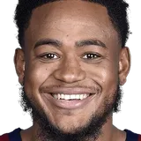

His best final NBA finish was #11 of 30, with the 2016-17 Memphis Grizzlies. In his 107 games for 2 teams over 3 seasons they went 42–65 (39.3%), −23 games under .500, with an average final finish of 22.0.
Jump to: Record by opponent · Season by season · Teammate help
Compare Deyonta Davis with…
Final NBA finish, season by season
Title Finals Other playoffs Missed playoffs. #1 = champion; the dashed line is last place that season. Each point opens that season's final standings.
All 30 teams ranked in 2016-17, his best finish (#11)Teammate help
 Marc Gasol1.01 season
Marc Gasol1.01 season Tony Allen0.51 season
Tony Allen0.51 season Trae Young0.21 season
Trae Young0.21 season
Career
Career records (W–L, W − L, with and without) include 2026-27 games through Nov. 25, 2026; season counts and finishes are through 2025-26. Each card opens its board in the same scope. How we count.

Latest completed seasons
Season by season
Newest first; every header sorts. Final NBA finish is the team's rank among all teams that season (#1 = champion) and opens that season's standings. "Without him" uses the team-season window; the span line counts only the games between his first and last game for the team.
| 2018-19 | #26 of 30 | 29–53 35.4% | Missed playoffs | 9 of 82 | 3–6 33.3% | 26–47 35.6%span: 2–0, gap −66.7 | −2.3 | |
| 2017-18 | #29 of 30 | 22–60 26.8% | Missed playoffs | 62 of 82 | 16–46 25.8% | 6–14 30.0%span: 2–13, gap +12.5 | −4.2 | |
| 2016-17 | #11 of 30 | 43–39 52.4% | Lost 1st round 2–4 | 36 of 82 | 23–13 63.9% | 20–26 43.5%span: 20–26, gap +20.4 | +20.4 |
On/off, starts and close games
From the lineup data, 1996-97 on. On/off is net points per 100 possessions with him on the floor minus off, a different unit from the win-rate gaps. Started and off the bench are team records in those games; close games are those within 5 points in the last 5 minutes with him on the floor.
Teammate help by season
Help this season = Teammates Score points for honors won that season by teammates who shared a game with him, with every teammate that adds to it. Only honors won in that same season count. How help works.
- 2018-19
 Atlanta
Trae Young All-Rookie 1st0.258 g
Atlanta
Trae Young All-Rookie 1st0.258 g Kevin Huerter All-Rookie 2nd0.1258 g
Kevin Huerter All-Rookie 2nd0.1258 g
Help this season: 0.375 = 0.25 Trae Young + 0.125 Kevin Huerter
Other teammates (no honors that season): Jaylen Adams 9 g, DeAndre Bembry 9 g, Justin Anderson 9 g, Alex Len 8 g, Kent Bazemore 8 g, Vince Carter 8 g, John Collins 7 g, Taurean Prince 6 g, Isaac Humphries 5 g, Dewayne Dedmon 3 g, BJ Johnson 1 g
- 2017-18
 MemphisHelp this season: 0, no honored teammate
MemphisHelp this season: 0, no honored teammate - 2016-17Memphis
Marc Gasol All-Star131 gTony Allen All-Def 2nd0.531 g
Help this season: 1.5 = 1 Marc Gasol + 0.5 Tony Allen
Other teammates (no honors that season): Andrew Harrison 35 g, JaMychal Green 33 g, Vince Carter 30 g, Zach Randolph 28 g, Mike Conley 28 g, Troy Daniels 27 g, Jarell Martin 24 g, James Ennis 23 g, Wade Baldwin 22 g, Troy Williams 18 g, Brandan Wright 10 g, Toney Douglas 9 g, Chandler Parsons 8 g, Wayne Selden 7 g
Record against each opponent
Regular season, through 2025-26 (2026-27 games not included): 107 games, 42–65, against 29 franchises.
Grouped by franchise (named as today); game lists keep each team's name that season. Filters and the tab are kept in the URL, so a filtered view can be shared.
| Games list | |||||||
|---|---|---|---|---|---|---|---|
| 6 | 1–5 | 16.7% | −4 | N/A | 2016-17 to 2018-19 | ||
| 6 | 4–2 | 66.7% | +2 | N/A | 2016-17 to 2017-18 | ||
| 6 | 1–5 | 16.7% | −4 | 0–1 (1–2 in games) | 2016-17 to 2018-19 | ||
| 5 | 2–3 | 40.0% | −1 | N/A | 2016-17 to 2017-18 | ||
| 5 | 2–3 | 40.0% | −1 | N/A | 2016-17 to 2017-18 | ||
| 5 | 3–2 | 60.0% | +1 | N/A | 2016-17 to 2018-19 | ||
| 5 | 2–3 | 40.0% | −1 | N/A | 2016-17 to 2018-19 | ||
| 4 | 2–2 | 50.0% | 0 | N/A | 2016-17 to 2017-18 | ||
| 4 | 1–3 | 25.0% | −2 | N/A | 2016-17 to 2017-18 | ||
| 4 | 3–1 | 75.0% | +2 | N/A | 2016-17 to 2017-18 | ||
| 4 | 1–3 | 25.0% | −2 | N/A | 2016-17 to 2017-18 | ||
| 4 | 2–2 | 50.0% | 0 | N/A | 2016-17 to 2018-19 | ||
| 4 | 2–2 | 50.0% | 0 | N/A | 2016-17 to 2017-18 | ||
| 4 | 3–1 | 75.0% | +2 | N/A | 2016-17 to 2018-19 | ||
| 4 | 2–2 | 50.0% | 0 | N/A | 2016-17 to 2017-18 | ||
| 4 | 3–1 | 75.0% | +2 | N/A | 2016-17 to 2017-18 | ||
| 4 | 1–3 | 25.0% | −2 | N/A | 2016-17 to 2017-18 | ||
| 3 | 1–2 | 33.3% | −1 | N/A | 2016-17 to 2017-18 | ||
| 3 | 1–2 | 33.3% | −1 | N/A | 2016-17 to 2017-18 | ||
| 3 | 1–2 | 33.3% | −1 | N/A | 2016-17 to 2018-19 | ||
| 3 | 0–3 | 0.0% | −3 | N/A | 2017-18 | ||
| 3 | 1–2 | 33.3% | −1 | N/A | 2016-17 to 2017-18 | ||
| 3 | 1–2 | 33.3% | −1 | N/A | 2016-17 to 2017-18 | ||
| 2 | 0–2 | 0.0% | −2 | N/A | 2017-18 | ||
| 2 | 0–2 | 0.0% | −2 | N/A | 2017-18 | ||
| 2 | 0–2 | 0.0% | −2 | N/A | 2017-18 | ||
| 2 | 0–2 | 0.0% | −2 | N/A | 2016-17 to 2017-18 | ||
| 2 | 1–1 | 50.0% | 0 | N/A | 2016-17 to 2018-19 | ||
| 1 | 1–0 | 100.0% | +1 | N/A | 2017-18 |
Rows add up to his career record in his games. A playoff series counts when he played in it; early round-robin games show as games only. How we count.
Playoffs, with and without him
| 2016-17 | Lost in the first round 2–4 to | #11 of 30 | 3 of 6 | 1–2 33.3% | 1–2 33.3% | 0.0 |
Arrival and departure
Team wins per 82 games the season before he arrived vs his first season there, and his last season vs the season after he left. He leaves a team only when his next season with games is for another team (or he never plays again); whole seasons he missed and came back from are one "Missed" row with the team's record without him. Per 82 so short seasons compare fairly. These are team records, not a measure of what he did.
| Left | after 2018-19 | 2018-19: 29–53 29.0 per 82 | 2019-20: 20–47 24.5 per 82 without him | −4.5 wins | |
| Arrived | 2018-19 | 2017-18: 24–58 24.0 per 82 | 2018-19: 29–53 29.0 per 82 | +5.0 wins | |
| Left | after 2017-18 | 2017-18: 22–60 22.0 per 82 | 2018-19: 33–49 33.0 per 82 without him | +11.0 wins | |
| Debut | 2016-17 | 2015-16: 42–40 42.0 per 82 | 2016-17: 43–39 43.0 per 82 | +1.0 wins |
Best duos
Team record in regular-season games both played, top 10 by win %, at least 50 games together.
 Andrew Harrison
35–42 45.5%
Andrew Harrison
35–42 45.5% James Ennis
23–30 43.4%
James Ennis
23–30 43.4%- Marc Gasol
36–49 42.4%
 JaMychal Green
30–50 37.5%
JaMychal Green
30–50 37.5%
Jarell Martin 29–49 37.2% Dillon Brooks
16–46 25.8%
Dillon Brooks
16–46 25.8%
With and without his teammates
His 12 teammates with the most regular-season games together. "Together" is the team's record in the games both played for it; "Without him" is the team's record in the games Deyonta Davis played for that team while the teammate was on it (between the teammate's first and last game for the team, the appearance span) and the teammate did not play. Fewer than 20 games without him: no gap. Games through Nov. 25, 2026. How we count.
- Marc GasolMemphis 2016-17 to 2017-18
- Together
- 36–49 42.4%
- Without him
- 3–8 27.3%
- Gap
- Too few games without him
- JaMychal GreenMemphis 2016-17 to 2017-18
- Together
- 30–50 37.5%
- Without him
- 8–4 66.7%
- Gap
- Too few games without him
- Jarell MartinMemphis 2016-17 to 2017-18
- Together
- 29–49 37.2%
- Without him
- 8–7 53.3%
- Gap
- Too few games without him
- Andrew HarrisonMemphis 2016-17 to 2017-18
- Together
- 35–42 45.5%
- Without him
- 2–11 15.4%
- Gap
- Too few games without him
- Dillon BrooksMemphis 2017-18
- Together
- 16–46 25.8%
- Without him
- N/A N/A
- Gap
- Too few games without him
- James EnnisMemphis 2016-17 to 2017-18
- Together
- 23–30 43.4%
- Without him
- 12–8 60.0%
- Gap
- 16.6 points higher
 Mario ChalmersMemphis 2017-18
Mario ChalmersMemphis 2017-18- Together
- 15–32 31.9%
- Without him
- 1–14 6.7%
- Gap
- Too few games without him
 Ben McLemoreMemphis 2017-18
Ben McLemoreMemphis 2017-18- Together
- 7–40 14.9%
- Without him
- 8–6 57.1%
- Gap
- Too few games without him
 Vince CarterMemphis 2016-17; Atlanta 2018-19
Vince CarterMemphis 2016-17; Atlanta 2018-19- Together
- 20–18 52.6%
- Without him
- 6–1 85.7%
- Gap
- Too few games without him
 Tyreke EvansMemphis 2017-18
Tyreke EvansMemphis 2017-18- Together
- 13–25 34.2%
- Without him
- 0–14 0.0%
- Gap
- Too few games without him
- Wayne SeldenMemphis 2016-17 to 2017-18
- Together
- 14–23 37.8%
- Without him
- 4–22 15.4%
- Gap
- 22.5 points lower
 Chandler ParsonsMemphis 2016-17 to 2017-18
Chandler ParsonsMemphis 2016-17 to 2017-18- Together
- 11–22 33.3%
- Without him
- 20–25 44.4%
- Gap
- 11.1 points higher